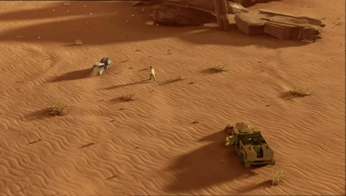
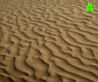

Project 1 | Project 2 |Project 3 (Team Project) |
Paper Presentation | Final Project
Introduction | [9.18 - 9.30]: Run | [9.34 - 9.37]: Hittin' the rock |
[9.38 - 9.41]: Off the car! | [9.44 - 9.48]: Round and round
[9.44 - 9.48]: ROUND AND ROUND
In the final sequence of the clip, our hero finally manages to catch the bad guy. An aerial view shows him running
his bike towards the prey.

The choice of this camera makes it easy to notice a couple of bad things about the
way the terrain is done,one static and one dynamic:
- The terrain looks too repetitive, tiling of the ground texture is extremely clear
from from such a distant perspective. Sand ripples are usually much more chaotic
(A)
than how they seem to be here.
- The movement of the bike over the ground does not affect the ground at all. This
makes the terrain completely lose the 'sandy' effect it is supposed to achieve.
While the first of the two previous points has a really simple fix (using a bigger
and more chaotic texture to render sand for this aerial sequence), the second is
much more tricky.
A possible solution would be adding some sort of 'decal' over
the ground where the bike has run, to simulate the trail left by wheels in the sand.
This kind of solution would probably require some additional work from the animators,
or the developement of some kind of automated way to place tray decals as the bike
moves. Another possible fix (at least in theory) would be using a phisical model
for sand, and then just let the bike go through it.
As we said, this would be probably
possible only in theory: a sand model fine grained enough to notice the bike trail,
and covering the entire area in which the bike moves would be too computationally
intensive to represent a real solution for this scenario.
|